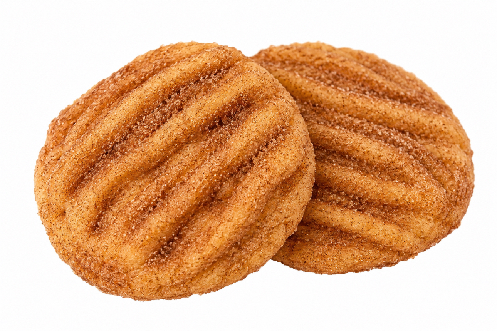

Home
Menu
Recipes
Order
Ingredients
Oatmeal Cookies (1hr 30min)
2 cups all purpose flour
1 teaspoon baking soda
1 teaspoon power soda
1 teaspoon cinnamon
½ teaspoon salt
1 cup unsalted butter (2 sticks), at room temperature
1 ¼ cups dark brown sugar
1 tablespoon honey
1 teaspoon vanilla extract
2 eggs
½ cup sweetened coconut
¾ cup dried cranberries
2 cups quick oats
½ teaspoon fresh rosemary, finely chopped
Direction
Preheat oven to 350 degrees F.
In a medium bowl, sift together flour, soda, powder, cinnamon, and salt.
Set aside.
In a large bowl, cream butter and sugar with a mixer.
Mix in honey and vanilla until fluffy.
Add eggs one at a time, until fully incorporated.
Mix in coconut, dried cranberries, oats, and rosemary.
Fold dry ingredients into butter mixture.
Form into balls, approximately 2 tablespoons.
Place 2 inches apart on parchment-lined cookie sheets.
Bake until cookies turn golden, 13 to 15 minutes.
Remove from the oven to a cooling rack.
Let it sit 5 minutes in the pan before transferring to a rack to cool completely.
Ingredients
Brownie Cookies (1hr 30min)
4 ounces baking chocolate ( unsweetened or bittersweet)
2 cups granulated sugar
2 sticks salted butter, softened
3 large eggs
1 tablespoons vanilla extract
2 ¼ cups all purpose flour
¼ cup plus 1 tablespoons cocoa powder
1 teaspoon baking powder
½ teaspoon kosher salt
Powdered sugar, for dusting
Direction
Preheat the oven to 350 degrees F. Line a baking sheet with a silicone baking mat or parchment paper.
Put the chocolate in a microwave-safe bowl and melt it in the microwave. Stir and let cool.
Using an electric mixer, mix the sugar and butter in a large bowl until totally combined. With the mixer on low, slowly drizzle in the cooled chocolate. Scrape the bowl and mix again.
Mix in the eggs one at a time, then the vanilla. Scrape the bowl once more and mix.
Combine the flour, cocoa powder, baking powder, and salt in a bowl and stir them together.
Add it in scoops to the mixing bowl with the mixer on low. Scrape the bowl once and mix one final time until all combined.
Scoop generous tablespoons of the dough onto the prepared baking sheet, then bake until the cookies are puffy and set, 11 to 12 minutes.
Let them sit on the baking sheet for 1 to 2 minutes, then remove them to a wire rack to cool completely. Repeat with the remaining dough.
Once cool, sprinkle generously with powdered sugar.
Ingredients
Churro Cookies (35min)
1½ cups flour
1½ teaspoon cinnamon
¼ teaspoon baking soda
1 teaspoon cinnamon
½ teaspoon salt
1 cup brown sugar packed
½ cup butter
1 large egg
1 tsp vanilla extract
Cinnamon Sugar Mix(to roll dough in)
>
½ cup white sugar
1 teaspoon cinnamon

Direction
In a medium-sized bowl, add the flour, cinnamon, baking soda and salt. Gently whisk together until well combined. Set aside.
In a large bowl, add the butter. Microwave for 20-30 seconds, until butter is soft and just barely starting to melt. Add the brown sugar to the bowl.
Using a mixer, cream together the sugar and butter by beating on low for approximately 2 minutes, or until well incorporated.
Add the egg and vanilla and beat until just combined.
Add the bowl of dry ingredients to the wet mix. Beat for about 2 more minutes or until dough is well incorporated. (It should form a large ball pretty easily when done mixing.)
Cover and refrigerate for 15-30 minutes. This will help the dough firm up a bit more so that it holds it's shape well and doesn't stick to your hands when you roll it in the cinnamon sugar mix.
Shape dough into 1 inch balls and roll in the cinnamon sugar mix. (About ½ cup white sugar mixed with 2 tbsp cinnamon.)
Place cookies an inch apart on a greased cookie sheet, or one lined with parchment paper or aluminum foil.
Bake at 350° for 10-11 minutes, or until edges turn light brown. Careful not to overcook.
Remove from oven and let them sit on the baking sheet for about five minutes. Then, move the cookies off the baking sheet to a cooling rack.
Ingredients
Chocolate chip Cookies (1hr 5min)
½ cup ( 1 stick) unsalted butter
¾ cup packed dark brown sugar
¾ cup sugar
1 teaspoon pure vanilla extract
1 (12-ounce ) bag semisweet chocolate chips or chunks
2 ¼ cups all-purpose flour
¾ teaspoon baking soda
1 teaspoon fine salt
Direction
Evenly position 2 racks in the middle of the oven and preheat to 375 degrees F. (on convection setting if you have it.)
Line 2 baking sheets with parchment paper or silicone sheets. (If you only have 1 baking sheet, let it cool completely between batches.)
Put the butter in a microwave-safe bowl, cover, and microwave on medium power until melted. (Alternatively, melt in a small saucepan.)
Cool slightly. Whisk the sugars, eggs, butter, and vanilla in a large bowl until smooth.
Whisk the flour, baking soda, and salt in another bowl. Stir the dry ingredients into the wet ingredients with a wooden spoon; take care not to overmix.
Stir in the chocolate chips or chunks.
Scoop heaping tablespoons of the dough onto the prepared pans. Wet your hands slightly and roll the dough into balls.
Space the cookies about 2 inches apart on the pans. Bake until golden, but still soft in the center, 12 to 16 minutes, depending on how chewy or crunchy you like your cookies.
Transfer hot cookies with a spatula to a rack to cool. Serve.
Ingredients
Snickerdoodles Cookies (1hr 30min)
½ cups salted butter, softened
½ cup vegetable shortening
1 ½ cup plus 2 tablespoons sugar
2 medium eggs
2 ¾ cupps all purpose flour
2 medium eggs
2 ¾ cups all purpose flour
2 teaspoon cream of tarter
1 teaspoon baking soda
¼ teaspoon fine salt
2 teaspoons ground cinnamon
Direction
Preheat the oven to 400 degrees F.
In a large bowl, combine the butter, shortening, 1 1/2 cups sugar and the eggs and mix thoroughly with an electric mixer on medium speed until creamy and well combined, 1 to 2 minutes.
Sift together the flour, cream of tartar, baking soda, and salt, and stir into the shortening mixture.
In a small bowl, stir together the remaining 2 tablespoons of sugar with the cinnamon.
Shape the dough into 1 1/2-inch balls (1 tablespoon per ball), and roll each ball in the cinnamon-sugar.
Arrange the dough balls 2 inches apart on ungreased cookie sheets. Bake two sheets at a time until the edges of the cookies are set, but the centers are still soft, 8 to 10 minutes, rotating the sheets halfway through.
Transfer the cookies to wire racks for cooling. Repeat with the remaining dough balls. Store in an airtight container.
Ingredients
Peanut Butter Cookies (45min)
1 cup sugar, ¼ cup additional to roll cookies
1 stick butter, at room temperature
1 egg
1 cup smooth peanut butter
1 teaspoon vanilla
½ teaspoon salt
½ teaspoon baking soda
1 ½ cups flour
Direction
Preheat oven to 375 degrees. Grease a baking sheet. In a large bowl, cream together sugar and butter. Beat the egg into the mixture.
Mix in peanut butter and vanilla until smooth and creamy. Stir in salt, baking soda, and flour until well combined.
Roll dough into 1-inch balls and then roll in sugar. Place on a baking sheet and flatten with a fork. Bake for 12-15 minutes.
Ingredients
Double Chocolate Cookies (1hr 24min)
1 stick unsalted butter, softened
⅓ cup granulated sugar
⅓ cup packed light brown sugar
1 large egg
1 teaspoon vanilla extract
1 cup all purpose flour
¼ cup natural cocca power( not dutch process)
½ teaspoon salt
1 cup chocolate chips
Direction
Beat the butter, granulated sugar and brown sugar in a bowl with a mixer on medium speed until fluffy. Add the egg and vanilla; beat.
Whisk the flour, cocoa powder, baking soda, and salt in a bowl. Add to the butter mixture and beat until just combined. Stir in the chocolate chunks.
Preheat the oven to 350 degrees F. Scoop rounded tablespoons of dough and roll into balls.
Arrange on parchment-lined baking sheets about 2 inches apart. Refrigerate 30 minutes, then bake until the cookies are golden on the bottom, 12 to 15 min.
Cool on the baking sheets, 10 minutes, then transfer to racks to finish cooling.
Ingredients
Red Velvet Cookies (1hr)
1 ½ cups all-purpose flour, plus more for for dusting
2 ½ tablespoons unsweetened cocoa powder
½ teaspoon kosher salt
¼ teaspoon baking soda
1 stick (1/2 ) unsalted butter, at room temperature
⅔ cups granulated sugar
1 large egg
1 teaspoon pure vanilla extract
1 ½ teaspoons red gel food coloring
1 cup white chocolate chips
Direction
Position the racks in the upper and lower thirds of the oven and preheat to 350 degrees F. Line 2 baking sheets with parchment.
Sift the flour, cocoa, salt, and baking soda together into a medium bowl. Whisk to combine and set aside.
In the bowl of a stand mixer fitted with the paddle attachment, cream the butter and sugar on medium speed until light and fluffy, about 3 minutes.
Add the egg and continue to mix on medium until combined, scraping the bottom and sides of the bowl as needed. Add the vanilla and food coloring and mix until combined and bright red.
Reduce the speed to low and spoon in the flour mixture. Continue to mix until just combined. Remove the bowl from the stand mixer and use a rubber spatula to ensure that all of the flour is incorporated.
Lightly flour a clean work surface. Mound the dough onto it and press it into a disc. Wrap in plastic and refrigerate for 30 minutes to allow the butter to firm up.
Remove the dough from the refrigerator and roll it to a thickness of 1/4 to 1/2 inch. Use cookie cutters to cut the dough into shapes and place them on the prepared baking sheets.
Brush off excess flour with a clean pastry brush if necessary. Freeze the cutouts for 15 minutes so they retain their shape when baked.
Bake until the cookies are dry and set, rotating the pans halfway through, 10 to 11 minutes. Transfer the cookies to a wire rack to cool completely.